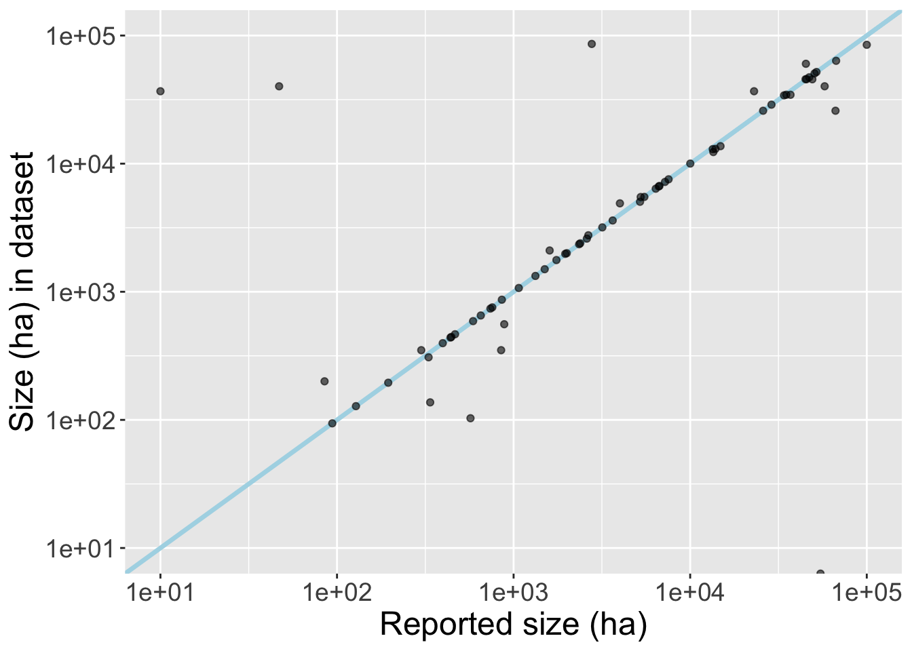

| Completed legal processes in formation of CFMGs | |||||||
| Proportion of CFMGs by province | |||||||
| province | CFMG recongnition | CF agreement | Management plan | Registration certificate | User-rights permit | Bylaws & constitution | Benefit sharing agreement |
|---|---|---|---|---|---|---|---|
| Central | 0.91 | 0.82 | 0.82 | 0.55 | 0.82 | 0.91 | 0.82 |
| Eastern | 0.83 | 0.75 | 0.67 | 0.08 | 0.50 | 0.67 | 0.67 |
| Lusaka | 1.00 | 1.00 | 1.00 | 1.00 | 1.00 | 1.00 | 1.00 |
| Muchinga | 0.93 | 0.93 | 0.86 | 0.57 | 0.71 | 0.93 | 0.93 |
| North-Western | 1.00 | 1.00 | 0.80 | 0.60 | 0.70 | 0.90 | 0.60 |
| Northern | 1.00 | 1.00 | 0.91 | 0.91 | 0.82 | 0.91 | 0.91 |
| Southern | 1.00 | 1.00 | 1.00 | 0.50 | 0.75 | 1.00 | 1.00 |
| Western | 1.00 | 0.83 | 0.83 | 0.67 | 0.83 | 1.00 | 1.00 |
CFMG Governance
Introduction
In this chapter, we consider questions concerning the governance and management of CFMGs.
CFMG legal processes
We asked CFMG executives what required legal processes had been completed, including the recognition letter, forest management agreement, forest management plan, community forest registration certificate, forest user-rights permit, CFMG bylaws & constitution, and benefit sharing agreement (Table 1).
Lusaka Province was the only province in which all the processes had been completed across all CFMGs, while Eastern Province had the highest proportion of incomplete legal processes. Overall, completion of legal processes was patchy. Some processes, such as the Recognition letter, CF Agreement, Management Plan and Bylaws & Constitution seem to have been completed for most CFMGs, but the Registration Certificate, User-rights Permit and Benefit-sharing Agreement were less often completed. This assessment is based on the responses of the CFMG Executives. It may be that more processes have been completed, but that the CFMG Executives are unaware. This may, especially be the case, if they are being supported by external agencies such as NGOs.
CFMG govenance processes
Through the survey we asked CFMG executives what govenance processes had been completed, such as holding elections and annual reporting (Table 2).
| Completed business processes in management of CFMGs | ||||||
| Proportion of CFMGs by province | ||||||
| province | CFMG elections | CFMG term limits | Receipt book | Bank acc | Permits | Honary forest officers |
|---|---|---|---|---|---|---|
| Central | 1.00 | 0.55 | 0.09 | 0.00 | 0.00 | 1.00 |
| Eastern | 0.83 | 0.73 | 0.75 | 0.83 | 0.17 | 0.83 |
| Lusaka | 1.00 | 0.33 | 0.33 | 0.83 | 0.00 | 1.00 |
| Muchinga | 1.00 | 0.75 | 0.55 | 0.36 | 0.33 | 0.91 |
| North-Western | 1.00 | 0.88 | 0.50 | 0.10 | 0.30 | 0.75 |
| Northern | 1.00 | 0.73 | 0.29 | 0.80 | 0.00 | 0.91 |
| Southern | 0.75 | 0.25 | 0.25 | 0.00 | 0.00 | 1.00 |
| Western | 1.00 | 0.86 | 0.00 | 0.00 | 0.00 | 0.86 |
While most CFMGs claim to have held elections, have term limits for executive officers and employ honary forest officers, most do not maintain a receipt book, have a bank account or issue permits.
It is also concerning that most CFMGs do not appear to have held elections since they were formed, up to five years ago (Figure 1).

It is concerning that 43 out of 72 CFMGs have not held elections for over 3 years, especially as in most CFMGs positions only have a tenure of 3 years or less.

So most CFMGs are currently not adhering to their constitutions.
Many CFMGs also appear very lax about holding meetings (Figure 3).

CFMG business processes
As with the legal processes, we also asked CFMG Executives abot the state of their business processes. Specifically, we asked if they had annual workplans and budgets, whether they had developed a business plan and if any forest user groups had been established (Table 3).
| Completed business processes in management of CFMGs | |||||
| Proportion of CFMGs by province | |||||
| province | CFMG workplan | Implementing plan | CFMG budget | Business plan | User groups |
|---|---|---|---|---|---|
| Central | 0.62 | 1.00 | 0.27 | 0.27 | 0.82 |
| Eastern | — | 0.92 | 0.83 | 0.58 | 0.50 |
| Lusaka | 0.67 | 0.67 | 0.67 | 0.17 | 0.33 |
| Muchinga | 1.00 | 1.00 | 0.43 | 0.71 | 0.86 |
| North-Western | 0.30 | 0.60 | 0.20 | 0.20 | 0.60 |
| Northern | — | 1.00 | 0.73 | 0.45 | 0.73 |
| Southern | 1.00 | 1.00 | 0.75 | 0.00 | 0.50 |
| Western | 0.67 | 1.00 | 0.00 | 0.33 | 1.00 |
The management processes were even more erratically completed than the legal processes. As substantial proportion of CFMGs did not have workplans, budgets or business plan. Even more surprising many did not have recognised user groups, which is critical to managing forest resources.
External support
All CFMGs are supported by the Forestry Deparment. However, the frequency of visits by District Forest Officers (DFOs) varied widely and in most cases they rarely or never visit.

Most CFMGs operate in partnership with an NGO or a private enterprise, such as a Carbon developer (Figure 5).

Within the
| CFMGs partnered with organisations | |
| n = number of CFMGs per catergory | |
| cfmg partner | n |
|---|---|
| no | 17 |
| yes | 58 |
Community forest size
We asked CFMG Executives the size of their community forest (CF). In Figure 6, their answers are plotted against the size given in the forest department database.

While most answers lie along the line, several are off - some by huge amounts. In some cases, there may be errors in the FD database. However, the other possibility is that the FPIC was not conducted properly and the CFMG Executive are misinformed about the size of their CF.
Interest in expanding the community forest
Next we asked interviewees whether they were interested in expanding the area of their community forest. A “yes” answer can be taken as an endorsement of community forest management (CFM). On the other hand, a negative response might reflect dissatisfaction with the CFMG management, but it could reflect a number of other reasons, such as a lack of sufficient addition forest area in the community.

As can be seen in Figure 7, the CFMG executives were enthusiastic to expand the CF in most cases. However, among the community this number dropped to 41 for female groups, 37 for male groups and to just 23 for youth groups.
The difference in attitudes between CFMG Executive and Youth FGD groups was significant, but the pairwise comparisons among other groups were not significant. These results might suggest that community forest management is entrenching elite capture (or other power dynamics) and that, at least across a proportion of the CFs, the youth do not feel they are realizing sufficient benefit from community forest management.
NoteInterest in expanding community forest - FGDs - Model methods
To examine the differences among FGD types, we employed a binomial GLMM (i.e. yes = want to expand, no = do not want to expand), with random intercepts for province and CFMG nested within province. We used FDG type as the factor. We examined the significance of pairwise differences among FDG types using Tukey HSD.
Code
test.data <- cfmg |> filter(interview_type != "individual_interview") |>
mutate(
expand_cfma = substr(
cfmg_governance_interest_expanding_cfma, 1,1),
expand_cfma = case_match(
expand_cfma,
"y" ~ "Yes",
"n" ~ "No",
"d" ~ "Don't know"
),
expand_cfma = factor(expand_cfma,
levels = c("Yes", "No", "Don't know")
)
) |>
mutate(
expand_cfma = if_else(expand_cfma == "Don't know", NA, expand_cfma)
)
M1 <- glmer(expand_cfma ~
interview_type +
(1 | province/cfmg_name),
family = binomial(link = "logit"),
data = test.data
)
emm.M1 <- emmeans(M1, specs = ~ interview_type)
pairwise.M1 <- pairs(emm.M1, adjust = "Tukey")Model results (click to expand)
Generalized linear mixed model fit by maximum likelihood (Laplace
Approximation) [glmerMod]
Family: binomial ( logit )
Formula: expand_cfma ~ interview_type + (1 | province/cfmg_name)
Data: test.data
AIC BIC logLik deviance df.resid
354.8 376.2 -171.4 342.8 256
Scaled residuals:
Min 1Q Median 3Q Max
-1.3876 -0.7592 -0.5235 0.9195 1.6791
Random effects:
Groups Name Variance Std.Dev.
cfmg_name:province (Intercept) 0.62497 0.7906
province (Intercept) 0.05076 0.2253
Number of obs: 262, groups: cfmg_name:province, 75; province, 8
Fixed effects:
Estimate Std. Error z value Pr(>|z|)
(Intercept) -0.9008 0.3064 -2.940 0.00328 **
interview_typecfmg_female 0.5487 0.3788 1.448 0.14751
interview_typecfmg_male 0.6226 0.3854 1.615 0.10623
interview_typecfmg_youth 1.2260 0.4154 2.951 0.00317 **
---
Signif. codes: 0 '***' 0.001 '**' 0.01 '*' 0.05 '.' 0.1 ' ' 1
Correlation of Fixed Effects:
(Intr) intrvw_typcfmg_f intrvw_typcfmg_m
intrvw_typcfmg_f -0.655
intrvw_typcfmg_m -0.649 0.521
intrvw_typcfmg_y -0.619 0.487 0.477 Pairwise comparisons (click to expand)
contrast estimate SE df z.ratio p.value
cfmg_executive - cfmg_female -0.5487 0.379 Inf -1.448 0.4691
cfmg_executive - cfmg_male -0.6226 0.385 Inf -1.615 0.3699
cfmg_executive - cfmg_youth -1.2260 0.415 Inf -2.951 0.0167
cfmg_female - cfmg_male -0.0739 0.374 Inf -0.198 0.9973
cfmg_female - cfmg_youth -0.6773 0.404 Inf -1.678 0.3351
cfmg_male - cfmg_youth -0.6034 0.410 Inf -1.471 0.4553
Results are given on the log odds ratio (not the response) scale.
P value adjustment: tukey method for comparing a family of 4 estimates Among the individual interviewees (Table 5), traditional leaders and community members more often reported that they did not want to expand the CF than other groups. However, the only pairwise comparisons that were significant were NGO representative with traditional leader and NGO representative with community member.
| Interest in expanding community forest by interviewee role | |||||
| Number of interviewees in each category | |||||
| Interest in expanding CFMA | Community member | CFMG Exec | Traditional Leader | District Forest Officer | NGO representative |
|---|---|---|---|---|---|
| Yes | 11 | 41 | 39 | 36 | 26 |
| No | 16 | 17 | 32 | 14 | 6 |
| Don't know | 3 | 4 | 4 | 6 | 0 |
NoteInterest in expanding community forest - Individual interviewees - Model methods
To examine differences among individual interviewees in their stated interest in expanding their community forest, we employed a binomial GLMM (i.e. yes = want to expand, no = do not want to expand) and included interviewee role, interviewee gender and interviewee age as factors. We specified random intercepts for province and cfmg nested within province. To examine the pairwise differences among interviewee roles, we employed Tukey HSD.
Code
test.data <- cfmg |> filter(interview_type == "individual_interview") |>
mutate(
expand_cfma = substr(
cfmg_governance_interest_expanding_cfma, 1,1),
expand_cfma = case_match(
expand_cfma,
"y" ~ "Yes",
"n" ~ "No",
"d" ~ "Don't know"
),
expand_cfma = factor(expand_cfma,
levels = c("Yes", "No", "Don't know")
)
) |>
mutate(
expand_cfma = if_else(expand_cfma == "Don't know", NA, expand_cfma),
interviewee_gender = demo_information_interviewee_gender,
interviewee_age = demo_information_interviewee_age
)
M2 <- glmer(expand_cfma ~
interviewee_role +
interviewee_gender +
interviewee_age +
(1 | province/cfmg_name),
family = binomial(link = "logit"),
data = test.data
)
emm.M2 <- emmeans(M2, specs = ~ interviewee_role)
pairwise.M2 <- pairs(emm.M2, adjust = "Tukey")Model results (click to expand)
Generalized linear mixed model fit by maximum likelihood (Laplace
Approximation) [glmerMod]
Family: binomial ( logit )
Formula:
expand_cfma ~ interviewee_role + interviewee_gender + interviewee_age +
(1 | province/cfmg_name)
Data: test.data
AIC BIC logLik deviance df.resid
300.1 331.4 -141.1 282.1 229
Scaled residuals:
Min 1Q Median 3Q Max
-2.0745 -0.6347 -0.4089 0.7636 2.7635
Random effects:
Groups Name Variance Std.Dev.
cfmg_name:province (Intercept) 1.0460 1.0227
province (Intercept) 0.1193 0.3454
Number of obs: 238, groups: cfmg_name:province, 72; province, 8
Fixed effects:
Estimate Std. Error z value Pr(>|z|)
(Intercept) -0.787932 0.977669 -0.806 0.4203
interviewee_rolecfmg_exec_member -1.294635 0.601186 -2.153 0.0313 *
interviewee_roletrad_leader -0.547859 0.586662 -0.934 0.3504
interviewee_roledfo -1.447932 0.632550 -2.289 0.0221 *
interviewee_roleNGO_rep -2.052228 0.736019 -2.788 0.0053 **
interviewee_gendermale 0.915355 0.493711 1.854 0.0637 .
interviewee_age 0.005378 0.014490 0.371 0.7105
---
Signif. codes: 0 '***' 0.001 '**' 0.01 '*' 0.05 '.' 0.1 ' ' 1
Correlation of Fixed Effects:
(Intr) int___ intr__ intrvw_r i_NGO_ intrvw_gn
intrvw_rl__ -0.395
intrvw_rlt_ -0.271 0.633
intrvw_rldf -0.515 0.625 0.616
intrvw_NGO_ -0.474 0.533 0.479 0.575
intrvw_gndr -0.382 -0.030 -0.073 -0.084 -0.050
interview_g -0.741 0.027 -0.158 0.226 0.247 -0.041 Pairwise comparisons (click to expand)
contrast estimate SE df z.ratio p.value
cfmg_member - cfmg_exec_member 1.295 0.601 Inf 2.153 0.1977
cfmg_member - trad_leader 0.548 0.587 Inf 0.934 0.8838
cfmg_member - dfo 1.448 0.633 Inf 2.289 0.1483
cfmg_member - NGO_rep 2.052 0.736 Inf 2.788 0.0423
cfmg_exec_member - trad_leader -0.747 0.509 Inf -1.467 0.5841
cfmg_exec_member - dfo 0.153 0.535 Inf 0.287 0.9985
cfmg_exec_member - NGO_rep 0.758 0.657 Inf 1.153 0.7780
trad_leader - dfo 0.900 0.536 Inf 1.679 0.4471
trad_leader - NGO_rep 1.504 0.687 Inf 2.190 0.1834
dfo - NGO_rep 0.604 0.638 Inf 0.948 0.8781
Results are averaged over the levels of: interviewee_gender
Results are given on the log odds ratio (not the response) scale.
P value adjustment: tukey method for comparing a family of 5 estimates Defined user groups
Among those CFMGs that had recognised user groups, they were involved in managing the following resources (Table 6).
| Recognised CFMG user-groups | |
| Totals across 75 CFMGs | |
| Resource type | Number |
|---|---|
| Timber | 14 |
| Poles | 0 |
| Firewood | 1 |
| Charcoal | 6 |
| Honey | 50 |
| Mushrooms | 37 |
| Wild fruit | 22 |
| Caterpillars | 26 |
| Chikanda | 14 |
| Munkoyo | 7 |
| Lusala busala | 1 |
| Mungongo | 5 |
| Devil's claw | 3 |
| Fish | 5 |
| Pupwe | 1 |
| Brooms | 1 |
| Bamboo | 1 |
| Medicinal plants | 16 |
| Wild meat | 2 |
| Resins | 0 |
| Thatching | 7 |
| Fibres | 1 |
| Eco-tourism | 1 |
Evidently, people are harvesting a wide variety of products from CFs. It is not clear, and probably not well defined, if these user-groups are defined within the CF management plan, or whether these are just informal groups that are nevertheless recognised by the CFMG.